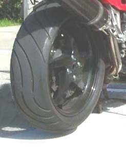

The rear tyre is the rubber cover on the rear rim. It carries most of the weight, especially with a passenger or load, and puts the drive force on the road.
What it does
Air pressure carries the load; the tread clears water; the rubber grips for drive and braking. Because it drives the bike, the rear tyre usually wears faster than the front, mainly in the centre on straight roads. Overloading and low pressure make it overheat and wear fast.
Signs it is worn or failing
- Air loss: Tyre slowly loses air, Flat tyre (tubeless), Flat tyre (tube), Air leaking at the bead.
- Flat centre: Tyre worn flat in the centre.
- Cracks or old rubber: Tyre is cracked or old.
- Bulge or cut: Tyre has a bulge or cut. Stop riding.
- Slides or weaves: Bike weaves.
When to replace it
Replace at the wear bars (TWI marks), at the limit in your manual, or at the legal minimum, whichever is first. Replace if cut, bulged, deeply cracked or about 10 years old.
What to match when buying
- Size, for example 130/90-15: 130 mm wide; sidewall 90 % of width; "-" is bias, "R" is radial; 15 inch rim.
- Load index and speed letter: at least the original rating. Rear tyres often need a higher load index.
- TL or TT to match the rim; Rear marking and rotation arrow.
- Date code (DOT, last four digits = week and year). Avoid old stock.
- A wider tyre than standard may rub the chain or swingarm. Stay with the sizes the manual lists.
Fitting notes
- Check cold pressure weekly, more with a passenger: Check tyre pressure.
- Puncture repair: Plug a tubeless tyre puncture (get home, then inspect) or Repair a puncture in an inner tube.
- Fitting: Replace a tyre (workshop).
- New tyres carry a mould release coating and are slippery at first. Ride gently until it wears off.
Reference (K-Light 125)
| Item | Value | PDF page |
|---|---|---|
| Rear tyre | 130/90-15, tubeless | 19, 49 |
| Cold pressure | 210 ± 10 kPa | 49, 71 |
| Tread wear limit in manual | 1 mm (local law may require more) | 71 |